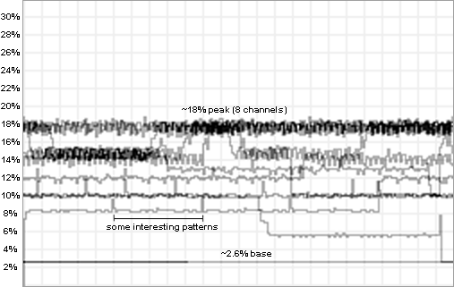
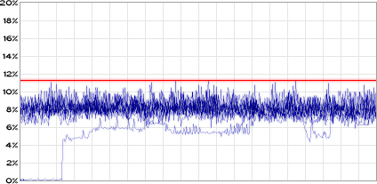
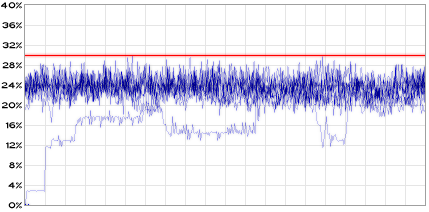
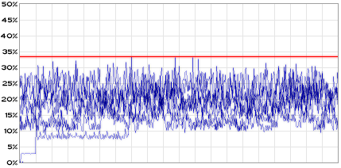

|
Maxmod
|
Maxmod is very optimized. Everything in the library is carefully hand-written in assembly language to achieve a small binary size and maximum CPU efficiency.

The above picture displays a graph recording the CPU usage level while an 8 channel module is playing at 16KHz mixing rate. 100% on this graph will equal one 60hz [59.737] frame of the GBA.
Notice the flat line on the bottom, this is the level that was recorded after the module had finished playing, this is the base CPU usage level. A little higher on the graph we notice some interesting spikes in the pattern, this is probably caused by the overhead of switching between patterns. At the top of the graphed data, it jumps around the 18% mark, this is when the intense parts of the module are being played.
The mixing time for each active channel depends on which panning position is used. Hard panned channels will mix faster than center/other panning positions.
Base Usage: ~2.6% CPU usage
| Channel Panning | CPU Per Active Channel |
|---|---|
| Hard-Left/Right | ~1.23% |
| Center | ~1.29% |
| Arbitrary | ~1.49% |
Another process that adds to the CPU load is module playback. This can effectively round up the CPU usage per channel to ~2%. Notice in the above graph the 18% peak area. That is approximately: 2.6% + 2% * 8. This formula [2.6 + 2 * channels] is an easy way to calculate the amount of CPU load there will be when playing a certain module.
The above tests were performed with WAITCNT = 4317h, that is WS0/ROM = 3,1 cycles & prefetch enabled. They also use standard configuration (channel data and wave buffer in EWRAM, mixing buffer in IWRAM, and 8 channels @ 16KHz).
The CPU load for the DS library varies from which audio mode you choose. When using the first mode, the sound mixing is done only by hardware and provides the smallest CPU load.

The graph above displays the load during playback of a 13 channel module. Although the module only uses 13 channels, the click avoidance procedures may raise the active channel count to 16 during some parts of the music.
In Mode B, the audio is still limited to 16 channels, but the data is resampled in software to achieve better quality.

Above is the CPU load for the same 13 channel module played with interpolation, peaking at around 30% CPU.
Finally, the last mode extends the maximum active channels to 30 with software mixing.

The last test was taken playing an IT module that hits the 30 channel limit. It peaks at around 34% CPU.
All of the modes provide superb audio with channel swapping, volume ramping, and a 200-256 Hz update rate.